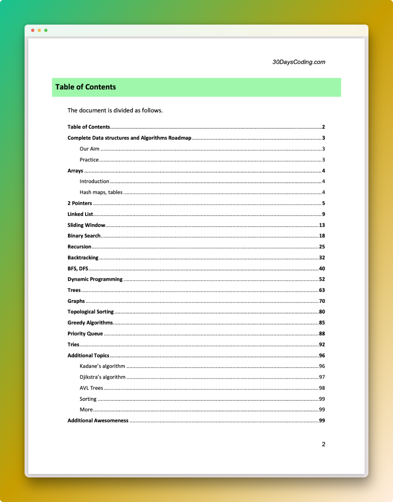

Best way to revise for your next coding interview
Get everything in a single guide: Data structures, algorithms, patterns, visualizers, questions, examples, solutions, explanations, and much more!
Excellent revision tool, specially when you have an interview coming up in 15 days or so. It's so hard to find everything in one place.

New
Release
Release
What's Included

15+ algo patterns discussed
Detailed solutions and explanations
Awesome resources, articles, blogs
Visualizers and animations included
100 pages of quality content
Concepts explained for beginners
All in one revision guide
This DSA course provided a a clear and practical approach to data structures. The hands-on projects and real-world examples made complex concepts more accessible, significantly enhancing my analytical skills and confidence in using data effectively.

Ryan Davis
Software Developer
This DSA course provided an in-depth look at data structures with practical, hands-on assignments. The clear explanations and challenging exercises greatly enhanced my understanding and ability to apply these concepts effectively.

Laura Bennett
Systems Analyst
This DSA course was incredibly insightful, offering a solid foundation in data structures through practical exercises and clear instruction. It helped me build essential skills for tackling complex problems and applying concepts in real-world scenarios.

Jordan Mitchell
Backend Engineer
This DSA course offered a clear and practical understanding of data structures. The well-structured lessons and hands-on exercises made it easy to master the concepts and apply them effectively in real-world situations.

Ethan Kim
Junior Software Developer